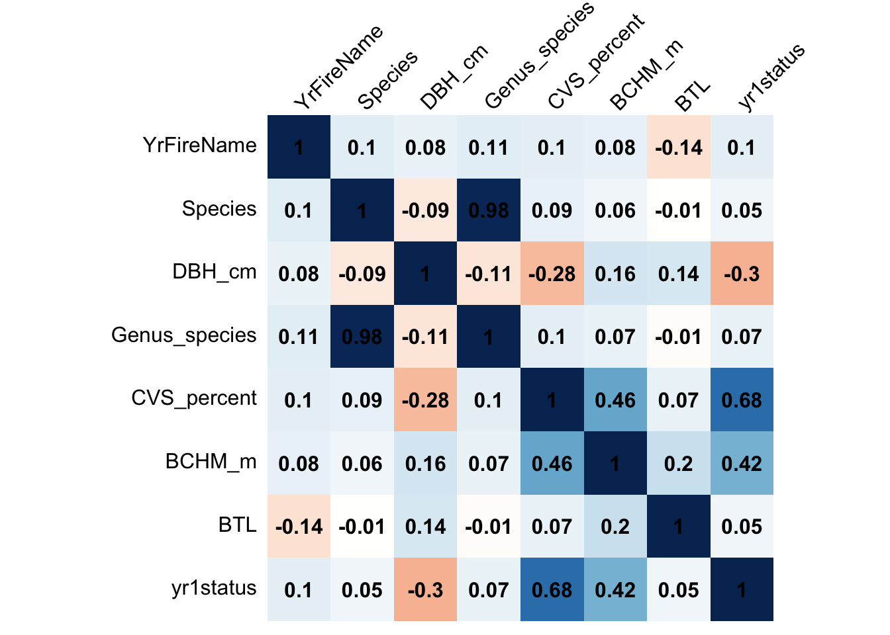
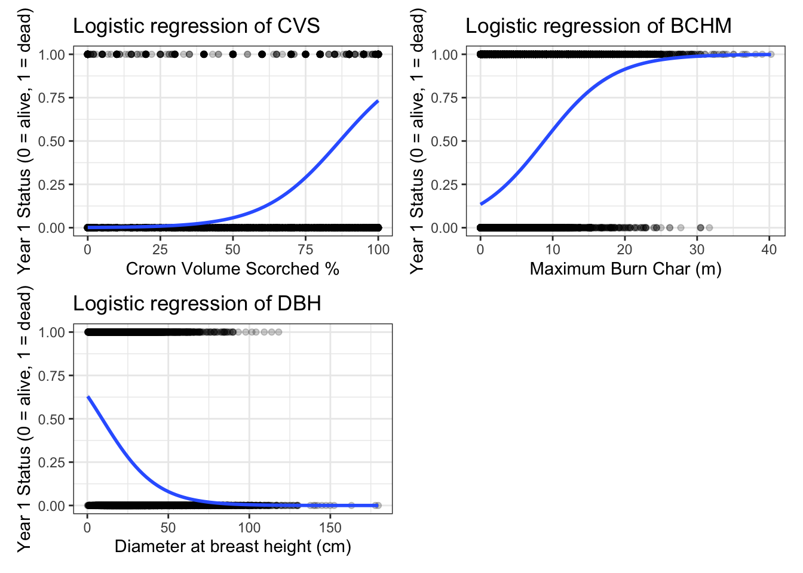

library(tidyverse)
library(skimr)
library(tidymodels)
library(caret)
library(corrplot)
library(patchwork)
Why predict post-fire tree mortality?
In the wake of devastating wildfires, one of the most pressing challenges faced by forest managers is assessing the extent of tree mortality. Accurate predictions of post-fire tree survival are crucial for informing management decisions, such as salvage logging operations, reforestation efforts, and ecological restoration strategies. Traditional methods of mortality assessment, which often rely on field surveys and visual inspections, can be time-consuming, labor-intensive, and prone to human error. By leveraging the power of algorithms and datasets, we can develop predictive models that can estimate tree mortality across large burned areas. In this tutorial, I’ll explore how to apply machine learning to predict post-wildfire tree mortality.
The Dataset
The database we’ll be working with today includes 36,066 observations of individual trees involved in prescribed fires and wildfires occurring over 35 years, from 1981 to 2016. It is a subset of a larger fire and tree mortality database from the US Forest Service (see data description for the full database here: link). Our goal today is to predict the likelihood of tree mortality after a fire.
The Approach
Load the libraries we will use for this project
Data Preparation
Outcome variable: yr1status = tree status (0=alive, 1=dead) assessed one year post-fire.
Predictors: YrFireName, Species, Genus_species, DBH_cm, CVS_percent, BCHM_m, BTL (Information on these variables available in the database metadata (link)).
#read in file
trees_dat<- read_csv(file = "https://raw.githubusercontent.com/MaRo406/eds-232-machine-learning/main/data/trees-dat.csv")Recode all the predictors to a zero_based integer form.
#recoding the predictors
#create a recipe for the data that defines the target variable "yr1status" and all other columns as predictors.
trees_recipe <- trees_dat %>% select(-...1) %>%
recipe(yr1status ~ ., data = trees_dat) %>%
#applies integer encoding to all predictors and starts with 0. this is part of the recipe step.
step_integer(all_string(), zero_based = TRUE) %>%
#preprocessor/preparing to the "trees_dat" data. calculates any necessary statistics or parameters based on the provided data, finalizing the recipe.
prep(trees_dat)
#creates a new dataset by applying the preprocessor to the "trees_recipe or trees_dat" data.
baked_trees <- bake(trees_recipe, new_data = NULL) Data Splitting
Create trees_training (70%) and trees_test (30%) splits for the modeling. This will allow us to train our models on a subset of the data and evaluate their performance on unseen data.
set.seed(123) #set seed for reproducibility
tree_split <- initial_split(data = baked_trees, prop = 0.7) # take the baked dataset and create splits for modeling
trees_train <- training(tree_split) #create training data
tree_test <- testing(tree_split) #create testing data How many observations are we using for training with this split?
# Number of observations in the training set
cat("we are using ", nrow(trees_train), " observations with this split for the training data")we are using 25246 observations with this split for the training dataSimple Logistic Regression
Let’s start our modeling effort with some simple models: one predictor and one outcome each.
Let’s choose, say, three predictors that most highly correlate with our outcome variable for further investigation.
# Obtain correlation matrix with our baked dataset
corr_mat <- cor(baked_trees %>% select(-...1))
# Make a correlation plot between the variables
corrplot(corr_mat, method = "shade", shade.col = NA, tl.col = "black", tl.srt = 45, addCoef.col = "black", cl.pos = "n", order = "original")
Now we can use glm() to fit three simple logistic regression models, one for each of the predictors we identified.
#fitting three simple logistic regression models, one for each predictor
cvs_model <- glm(yr1status ~ CVS_percent, family = "binomial", data = trees_train)
bchm_model <- glm(yr1status ~ BCHM_m, family = "binomial", data = trees_train)
dbh_model <- glm(yr1status ~ DBH_cm, family = "binomial", data = trees_train)Interpret the Coefficients
We aren’t always interested in or able to interpret the model coefficients in a machine learning task. Often predictive accuracy is all we care about.
That said, let’s take a stab at interpreting our model coefficients.
# CVS_percent
broom::tidy(cvs_model)# A tibble: 2 × 5
term estimate std.error statistic p.value
<chr> <dbl> <dbl> <dbl> <dbl>
1 (Intercept) -6.61 0.111 -59.4 0
2 CVS_percent 0.0762 0.00122 62.7 0# BCHM_m
tidy(bchm_model)# A tibble: 2 × 5
term estimate std.error statistic p.value
<chr> <dbl> <dbl> <dbl> <dbl>
1 (Intercept) -1.86 0.0227 -81.9 0
2 BCHM_m 0.211 0.00379 55.8 0# DBH_cm
tidy(dbh_model)# A tibble: 2 × 5
term estimate std.error statistic p.value
<chr> <dbl> <dbl> <dbl> <dbl>
1 (Intercept) 0.546 0.0318 17.2 4.55e-66
2 DBH_cm -0.0598 0.00128 -46.7 0 [1] "A one % increase in pre-fire crown volume scorched (CVS) increases the odds of tree mortality multiplicatively by 1.0791 year after a fire event"[1] "A one meter increase in the maximum burn char (BCHM) increases the probability that a tree will have died multiplicatively by 1.2351 year after a fire event"[1] "A one cm increase in the diameter of the tree at the breast height (DBH) decreases the probability that a tree will have died multiplicatively by 0.0581 year after a fire event"Visualize
Now let’s visualize the results from these models. Plot the fit to the training data of each model.
# visualizing results from the models
#PLOT OF CVS
cvs_plot <- ggplot(trees_train, aes(x=CVS_percent, y=yr1status)) + geom_point(alpha = 0.2) +
stat_smooth(method="glm", se=TRUE,
method.args = list(family=binomial)) +
theme_bw() +
labs(x = "Crown Volume Scorched %",
y = "Year 1 Status (0 = alive, 1 = dead)",
title = "Logistic regression of CVS")
#PLOT OF MAXIMUM BURN CHAR AREA
bchm_plot <- ggplot(trees_train, aes(x=BCHM_m, y=yr1status)) + geom_point(alpha = 0.2) +
stat_smooth(method="glm", se=TRUE,
method.args = list(family=binomial)) +
theme_bw() +
labs(x = "Maximum Burn Char (m)",
y = "Year 1 Status (0 = alive, 1 = dead)",
title = "Logistic regression of BCHM")
#PLOT OF DIAMETER AT BREAST HEIGHT
dbh_plot <- ggplot(trees_train, aes(x=DBH_cm, y=yr1status)) + geom_point(alpha = 0.2) +
stat_smooth(method="glm", se=TRUE,
method.args = list(family=binomial)) +
theme_bw() +
labs(x = "Diameter at breast height (cm)",
y = "Year 1 Status (0 = alive, 1 = dead)",
title = "Logistic regression of DBH")
### arrange plots together
cvs_plot + bchm_plot + dbh_plot+ plot_layout(ncol=2)
Multiple Logistic Regression
Let’s not limit ourselves to a single-predictor model. More predictors might lead to better model performance.
Use glm() to fit a multiple logistic regression called “logistic_full”, with all three of the predictors included. Which of these are significant in the resulting model?
# Fit a multiple logistic regression model
logistic_full <- glm(yr1status ~ CVS_percent + BCHM_m + DBH_cm, family = "binomial", data = trees_train)
# Display the summary of the model
summary(logistic_full)
Call:
glm(formula = yr1status ~ CVS_percent + BCHM_m + DBH_cm, family = "binomial",
data = trees_train)
Coefficients:
Estimate Std. Error z value Pr(>|z|)
(Intercept) -4.762446 0.115367 -41.28 <2e-16 ***
CVS_percent 0.061454 0.001177 52.20 <2e-16 ***
BCHM_m 0.159395 0.005438 29.31 <2e-16 ***
DBH_cm -0.060724 0.001945 -31.21 <2e-16 ***
---
Signif. codes: 0 '***' 0.001 '**' 0.01 '*' 0.05 '.' 0.1 ' ' 1
(Dispersion parameter for binomial family taken to be 1)
Null deviance: 30086 on 25245 degrees of freedom
Residual deviance: 13282 on 25242 degrees of freedom
AIC: 13290
Number of Fisher Scoring iterations: 7For the logistic model with three predictors (CVS, BCHM, and DBH), all the predictors are significant in the model as their p-values are near zero.
Estimate Model Accuracy
Now we want to estimate our model’s generalizability using resampling.
Let’s use cross validation to assess model accuracy. We can use caret::train() to fit four 10-fold cross-validated models (cv_model1, cv_model2, cv_model3, cv_model4) that correspond to each of the four models we’ve fit so far: three simple logistic regression models corresponding to each of the three key predictors (CVS_percent, DBH_cm, BCHM_m) and a multiple logistic regression model that combines all three predictors.
#convert yr1status to a factor
trees_train <- trees_train %>%
mutate(yr1status = as.factor(yr1status)) # converted the outcome variable to a factor
#CVS model
cv_model1 <- train(
yr1status ~ CVS_percent,
data = trees_train,
method = "glm",
family = "binomial",
trControl = trainControl(method = "cv", number = 10)
)
#BCHM model
cv_model2 <- train(
yr1status ~ BCHM_m,
data = trees_train,
method = "glm",
family = "binomial",
trControl = trainControl(method = "cv", number = 10))
#DBH model
cv_model3 <- train(
yr1status ~ DBH_cm,
data = trees_train,
method = "glm",
family = "binomial",
trControl = trainControl(method = "cv", number = 10))
#Full Model
cv_model4 <- train(
yr1status ~ CVS_percent + BCHM_m + DBH_cm,
data = trees_train,
method = "glm",
family = "binomial",
trControl = trainControl(method = "cv", number = 10))Use caret::resamples() to extract then compare the classification accuracy for each model. However, resamples() wont give you what you need unless you convert the outcome variable to factor form. Which model has the highest accuracy?
#comparing the classification accuracy of the models
summary(
resamples(
list(
model1 = cv_model1,
model2 = cv_model2,
model3 = cv_model3,
model4 = cv_model4
)
)
)$statistics$Accuracy Min. 1st Qu. Median Mean 3rd Qu. Max. NA's
model1 0.8887129 0.8918708 0.8976238 0.8975291 0.9004556 0.9152139 0
model2 0.7631683 0.7662441 0.7718365 0.7718450 0.7770627 0.7817822 0
model3 0.7473267 0.7482178 0.7496533 0.7508912 0.7520545 0.7596040 0
model4 0.8918812 0.9009901 0.9057052 0.9041038 0.9086139 0.9104950 0Model 4 has seems to have the highest mean accuracy (0.904) compared to the other models. The other models CVS, DBH, and BCHM have mean accuracy values between 0.75-0.89.
Let’s move forward with this single most accurate model.
Compute the confusion matrix and overall fraction of correct predictions by the model.
#making predictions on the training data
pred_trees <- predict(cv_model4, data = tree_train)
#confusion matrix using the model predictions
cm <- confusionMatrix(
data = factor(pred_trees),
reference = factor(trees_train$yr1status)
)
cm_TN00 <- cm$table[1] #True Negative
cm_FP10 <- cm$table[3] #False Negative
cm_FN01 <- cm$table[2] #False Positive
cm_TP11 <- cm$table[4] #True Positive The overall fraction is (True Positives + True Negatives) / (Total Count of Predictions)
The overall fraction of correct predictions computed is 0.904
The accuracy of the model is calculated by the number of true positive ( 6295 ) and true negative predictions ( 16527 ) over all of the predictions madeWhat confusion matrix is telling us about the types of mistakes made by logistic regression.
The confusion matrix gives the number of true negatives, false negatives (Type 2 error), false positives (Type 1 error) and true positives made in the logistic regression. We see that there are 852 false negatives (Type 2 error) and 1572 false positives (Type 1 error) made by the logistic regression. This means that there are twice as many false positives as there are false negatives. In this case, it is saying that the logistic regression is twice as often to predict that trees will burn when they won’t burn, than that trees won’t burn when they will burn.
cm$table Reference
Prediction 0 1
0 16527 852
1 1572 6295You can use this information to show the accuracy (described in Q11), the specificity (the number of correct negative predictions divided by the total number of actual negatives), and the sensitivity (the number of correct positive predictions over the total number of positives).
What is the overall accuracy of the model?
The accuracy of the model is .904 and is calculated by the total number of correct predictions divided by the total number of predictions (correct and incorrect predictions). It tells us that the model is 90.4% accurate.
Test Final Model
Alright, now we’ll take our most accurate model and make predictions on some unseen data (the test data).
Now that we have identified our best model, evaluate it by running a prediction on the test data, trees_test.
#making the yr1ststus a factor
tree_test <- tree_test %>%
mutate(yr1status = as.factor(yr1status))
#using the model to make predictions on the test data
pred_test_trees <- predict(cv_model4, newdata = tree_test)
#confusion matrix for the test data predictions
cv4_cm <- confusionMatrix(
data = factor(pred_test_trees),
reference = factor(tree_test$yr1status)
)
cv4_cmConfusion Matrix and Statistics
Reference
Prediction 0 1
0 7032 366
1 702 2720
Accuracy : 0.9013
95% CI : (0.8955, 0.9069)
No Information Rate : 0.7148
P-Value [Acc > NIR] : < 2.2e-16
Kappa : 0.7656
Mcnemar's Test P-Value : < 2.2e-16
Sensitivity : 0.9092
Specificity : 0.8814
Pos Pred Value : 0.9505
Neg Pred Value : 0.7949
Prevalence : 0.7148
Detection Rate : 0.6499
Detection Prevalence : 0.6837
Balanced Accuracy : 0.8953
'Positive' Class : 0
How does the accuracy of this final model on the test data compare to its cross validation accuracy?
[1] "Accuracy of final mode: 0.901293900184843"CV accuracy results
Min. 1st Qu. Median Mean 3rd Qu. Max. NA's
model4 0.8958416 0.8975248 0.9031491 0.9024406 0.9060833 0.9092710 0The accuracy of this final model is very similar to that of the cross validation accuracy on the test data. This is not surprising as the variables included in the model were pretty well correlated with tree death. Also because there is a class imbalance in the response variable (given by the “No information rate”, or proportion of observations that fall within the majority class, which indicates that ~71% of the trees are living); so, if the model just used that statistic for prediction it would be right roughly 71% of the time. Using other variables to improve the model to by an additional 20% seems reasonable.
Citation
BibTeX citation:
@online{hamilton2024,
author = {Hamilton, Flora},
title = {Fire and {Tree} {Mortality}},
date = {2024-03-15},
url = {https://floraham.github.io/Projects/2024-03-15-fire-tree-mortality/},
langid = {en}
}
For attribution, please cite this work as:
Hamilton, Flora. 2024. “Fire and Tree Mortality .” March
15, 2024. https://floraham.github.io/Projects/2024-03-15-fire-tree-mortality/.